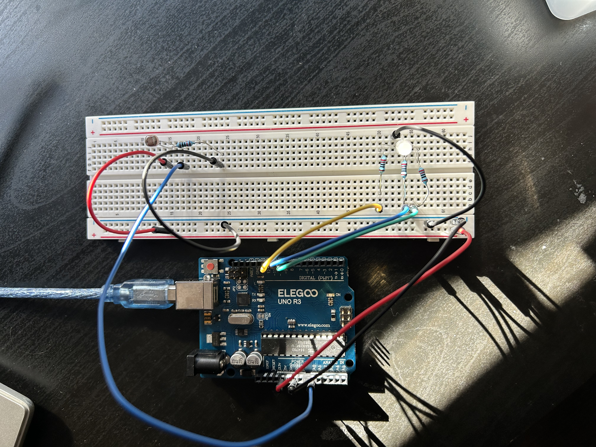
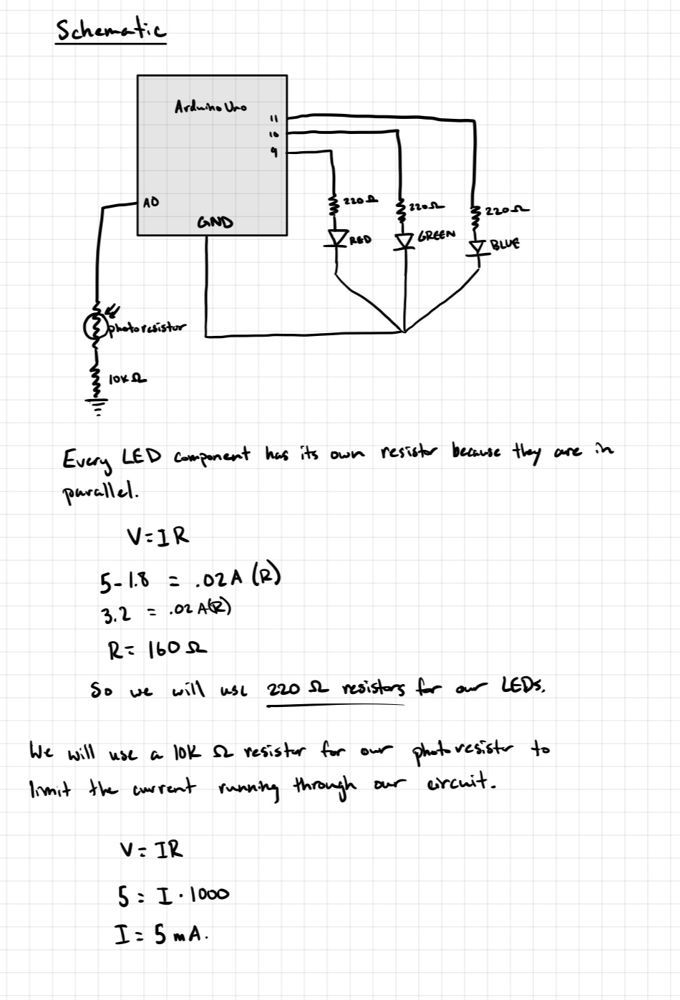
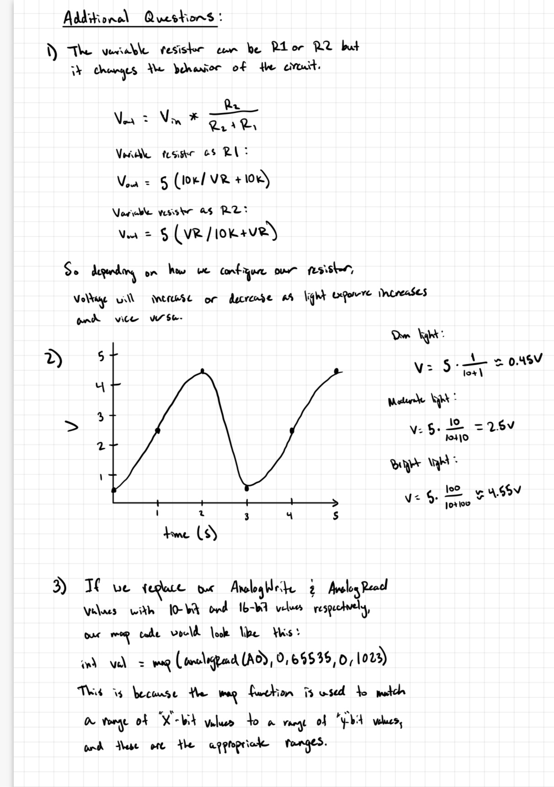

// Identifies Analog input A0 as sensor_pin
int sensor_pin = A0;
// identifies appropriate led to its pin.
int led_red = 11;
int led_green = 10;
int led_blue = 9;
void setup() {
// Initiate serial communication
Serial.begin(96000);
// Identifies led pins as output.
pinMode(led_red, OUTPUT);
pinMode(led_green, OUTPUT);
pinMode(led_blue, OUTPUT);
}
void loop() {
// reads the voltage of the photoresistor.
int light_val = analogRead(sensor_pin);
// maps the voltage to an appropriate led brightness.
int brightness = map(light_val, 0, 1023, 0, 255);
// The led will light up corresponding to the brightness
// the photoresistor is exposed to.
// Darkness -> Red; Moderate -> Green; Bright -> Blue
if (light_val < 341) {
analogWrite(led_red, brightness);
analogWrite(led_green, 0);
analogWrite(led_blue, 0);
Serial.println("Darkness detected. -- RED");
} else if (light_val < 682) {
analogWrite(led_red, 0);
analogWrite(led_green, brightness);
analogWrite(led_blue, 0);
Serial.println("Moderate light detected. -- GREEN");
} else {
analogWrite(led_red, 0);
analogWrite(led_green, 0);
analogWrite(led_blue, brightness);
Serial.println("Bright light detected. -- BLUE");
}
// wait 200 ms.
delay(200);
}